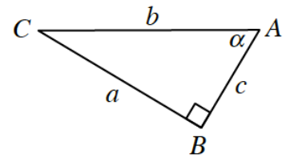
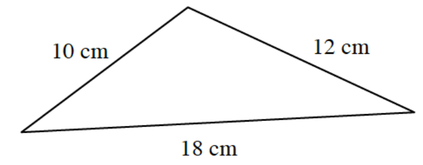
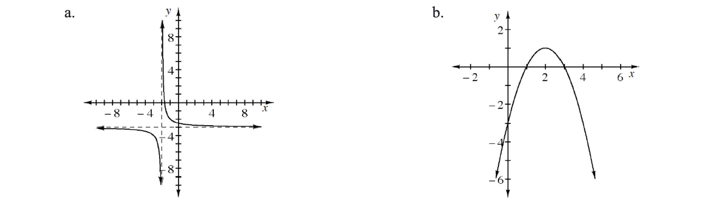

The graph of a transformation of \(y=\cos\left(x\right)\) has the \(y\)-axis as a line of symmetry and \(\left(20,50\right)\) as a point of symmetry. The line \(y=15\) is tangent to the graph at many places. Write a possible equation for this graph.
Given the equation \(s^2+c^2=1\), simplify each of the following expressions.
\(c^2+s^2\)
\(7s^2+7c^2\)
\(6-c^2-s^2\)
\(3\left(c^2+s^2\right)-4\)
Melinda says that if the graph of \(g\) has a period of \(3\) and an amplitude of \(10\), then the graph of \(f(x)=2g\left(4x\right)+1\) has a period of \(12\) and an amplitude of \(11\). Do you agree? Explain your reasoning.

Solve: \(x\left(x+5\right)+2x\left(x+5\right)=0\). Hint: Let \(a=x+5\) and factor.
Solve for \(x\) if \(0\le x<2\pi\).
\(4\sin\left(x\right)=1\)
\(3\tan^2\left(x\right)=1\)
Simplify each of the following rational expressions.

Refer to the graph to write equations that model each situation.

When the population of a city rises and falls each year in a repeating pattern.
When the height of a weight on a spring decreases over time but still oscillates.
When a signal oscillates with larger and larger amplitude over time.
Write a possible equation for each graph below.
\(g(x)=e^{-0.1x}\sin\left(x\right)\)
\(g(x)=e^{0.1x}\sin\left(x\right)\)
\(g(x)=e^{-x^2/25}\sin\left(x\right)\)